맥라렌-애스턴마틴 타고 인제서킷 달려보니
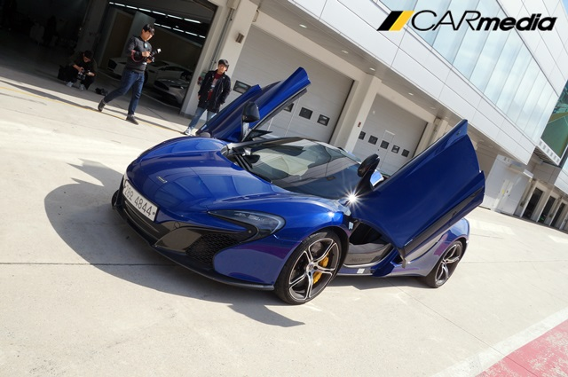【카미디어】 김성환 기자 = '엄청난' 하루다. 컴퓨터 화면 속에서나 봤던 맥라렌과 애스턴마틴을 직접 타봤다. 일반 도로에서 잠깐 타 본 게 아니다. 격하기로 소문난 인제 서킷에서 시속 230km를 꺾으며 질주했다. 출발 전에는 '포르쉐보다 정말 좋을까? M4보다 3배 비싼 감동이 느껴질까? 등의 궁금증을 주문처럼 외웠지만 운전대를 잡자마자 머리 속에는 딱 두 글자만 남고 모두 사라졌다. '우와!'
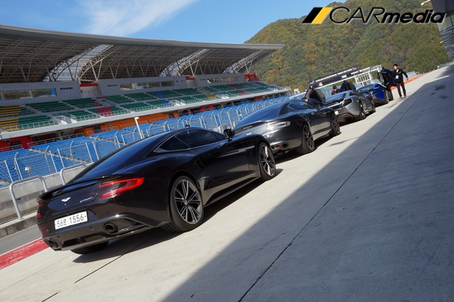오늘 행사는 애스턴마틴과 맥라렌의 공식 딜러인 기흥인터내셔널이 출범 이후 처음으로 개최한 트랙 이벤트였다. 행사에 투입된 차도 어마어마하다. 맥라렌 650S와 스파이더, 애스턴마틴 DB9, 뱅퀴쉬, 라피드S 등 이름만 들어도 화려한 차들이다. 5대의 가격을 합하면 무려 16억을 뛰어 넘는다. 가격에 놀라고 생김새에 놀라고 압도적인 배기음에 또 한번 놀랐다. 첫 인상부터 짜릿한 행사였다.
본격적으로 서킷에 들어가기 전에 장애물을 빠르게 통과하는 짐카나 코스를 체험했다. 전문 강사는 간단한 몸풀기 단계라고 말하며, 애스턴마틴 DB9 쿠페의 시동을 걸어줬다. 몸풀기 치고는 꽤 무서운 차다. 517마력을 내뿜는 슈퍼카로 좁은 장애물을 빠르게 통과한다는 건 또 다른 도전이었다.
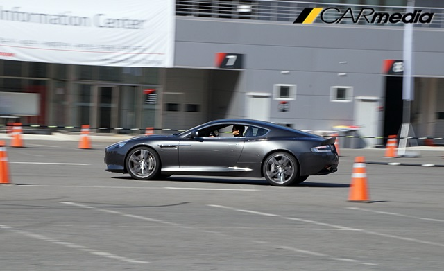 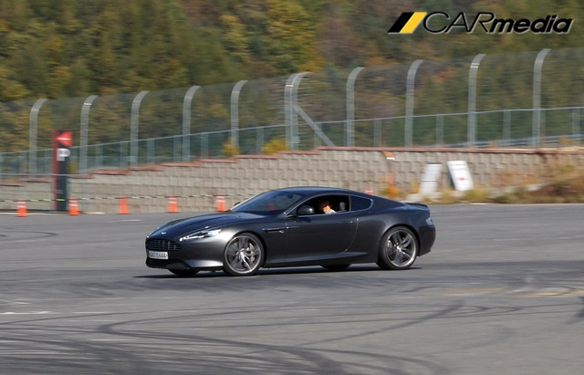차의 성능을 생각해 콘과 콘 사이의 거리도 멀찌감치 떨어트렸다. 가속 페달을 밟으니 헛바퀴를 돌며 튀어나간다. 멀게만 느껴졌던 콘이 순식간에 코 앞에 와 있다. 급하게 방향을 꺾고, 급차선 변경과 원선회를 이어나갔다. 애스턴마틴은 생각보다 민첩했다. 길고 큰 차체가 무색할 만큼 정확한 선을 그리며 요리조리 장애물을 탈출한다. 역시 제임스 본드의 차 답다.
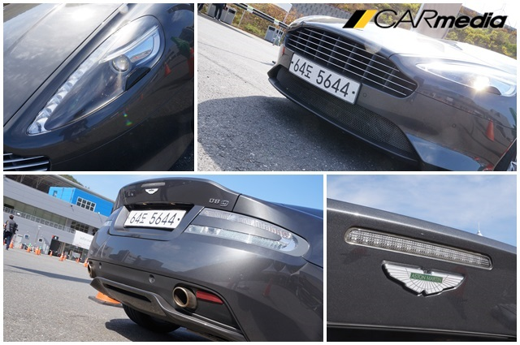DB9은 경쾌하게 몸을 틀었다. 요리조리 잘 피하는 느낌이 마치 소형차를 타고 있는 것 같은 착각이 들 정도였다. 더 욕심이 났다. 하지만 욕심은 항상 화를 부른다. 가속페달을 깊게 밟으니 차는 뒤 꽁무니를 바깥으로 흘리며 돌아버리고 만다. 역시 12기통 6리터 자연흡기 엔진을 넣은 ‘슈퍼카’다. 나긋나긋하게 비유를 맞추다가 수가 틀리면 바로 본색을 드러낸다. 운전대를 잡은 손은 이내 겸손해진다.
서킷에서는 애스턴마틴과 맥라렌이 동시에 준비됐다. 먼저 날개를 활짝 펼친 맥라렌 650S 스파이더에 몸을 구겨 넣었다. 650S 스파이더는 엔진이 운전석 뒤쪽에 들어가는 미드십 구조 슈퍼카다. 여기에 V형 8기통 4리터 터보차저 엔진이 최고출력 650마력, 최대토크 69.1kg.m를 발휘한다.
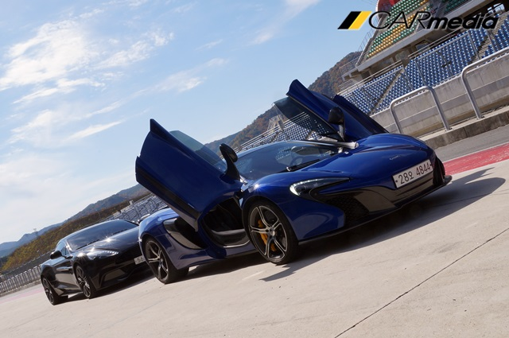 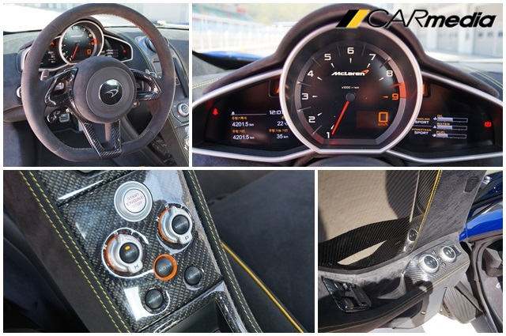시동 버튼을 누르니 굵은 배기음을 토해내며 달릴 준비를 마친다. 이내 서킷으로 나가 가속페달을 밟으니 말도 안 되는 속도로 차를 몰아 붙인다. 어디서 속도를 올리고, 몇 번 코너에서 브레이크를 잡는지, 강사에게 들었던 코스 공략법은 하나도 떠오르지 않았다. 그저 빠른 속도에 시선이 흐릿해지고 물리력을 무시한 코너링에 정신을 쏙 빼놓는다. 급브레이크를 잡을 때는 엉덩이가 공중에 뜨기도 한다. 처음 느껴보는 경험이다. 정말 짜릿하다.
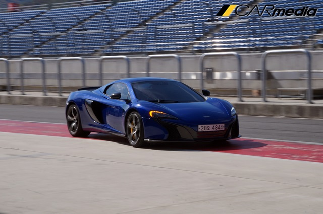웬만한 차로는 엄두도 못 낼 깊은 코너를 650S 스파이더는 아무렇지 않게 휙 지나간다. 바닥에 바싹 붙어 도는 동작이 무척 안정적이다. 고성능 스포츠 브레이크와 305mm급 타이어, 탄탄한 하체 셋팅이 조화를 이뤄 강력한 성능을 뒷받침 해준다. 여기에 조금만 무리하면 곧바로 안전장치가 개입해 바른 길로 안내한다. 바람처럼 지나가는 주변 사물과 고막을 찢을듯한 배기음을 제외하면 고성능 로드스터를 타는 것 같은 느낌도 들었다. 화끈한 성능과 뛰어난 균형감으로 종횡무진 인제서킷을 누비는 650S 스파이더가 한 없이 당당해 보였다.
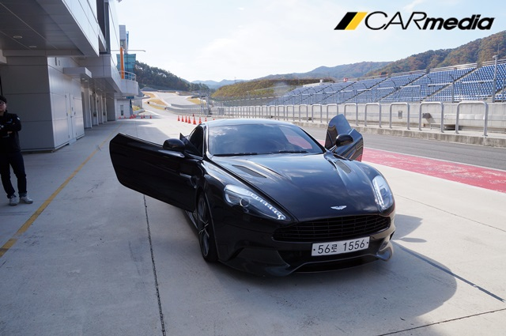곧바로 애스턴마틴 뱅퀴시로 갈아탔다. 확실히 맥라렌과는 다른 느낌, 다른 반응이다. 말도 안 되는 힘과 속도를 뿜어내지만 그 과정이 한결 편하다. 코너에서도 여유롭고 안정적인 자세로 돌아 나간다. 직결감 좋은 8단 자동변속기와 자연흡기 엔진의 조화로 막힘 없이 올라가는 반응도 좋다. 애스턴마틴이 추구하는 GT카의 성향이 온전히 드러나는 느낌이다.
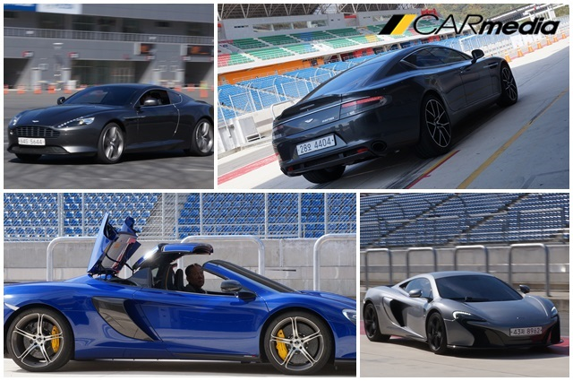금세 서킷을 돌아오고, 또 바꿔 타고, 전문 강사의 지도를 받으며 다시 타보니 3시간 남짓 행사가 3분처럼 지나갔다. 행사가 끝날 무렵에는 공허함과 함께 현실에 대한 부담이 파도처럼 밀려온다. 맥라렌과 애스턴마틴은 정말 대단했다. 경쟁차와 비교해 어디가 더 좋고 나쁨을 논하기도 힘들다. 디자인과 성능, 추구하는 방향 등 맥라렌과 애스턴마틴이 갖고 있는 매력만 얘기해도 마음은 이미 기울어 질 것이다.
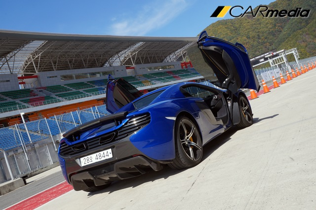오늘 시승한 차들 중 가장 저렴한 모델은 애스턴마틴 DB9으로 기본 가격만 2억 5천 9백만원이 넘는다. 이 외에 차들은 최소 3억원 이상의 몸값을 갖고 있다. 옵션 가격도 만만치 않다. 차종별로 카본 범퍼와 스포일러, 고성능 브레이크와 휠, 실내 바느질 색깔까지 모두 옵션이다. 이것저것 옵션을 더하면 4,000만원에서 6,000만원은 더 줘야 된다. 가격을 들으니 더욱 더 꿈속에서 만난 것 같은 느낌이다.